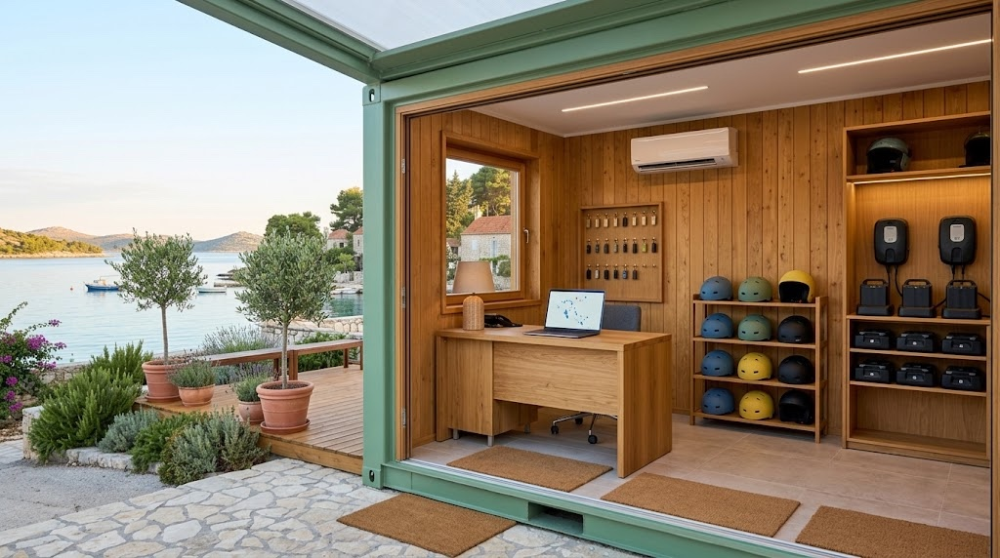
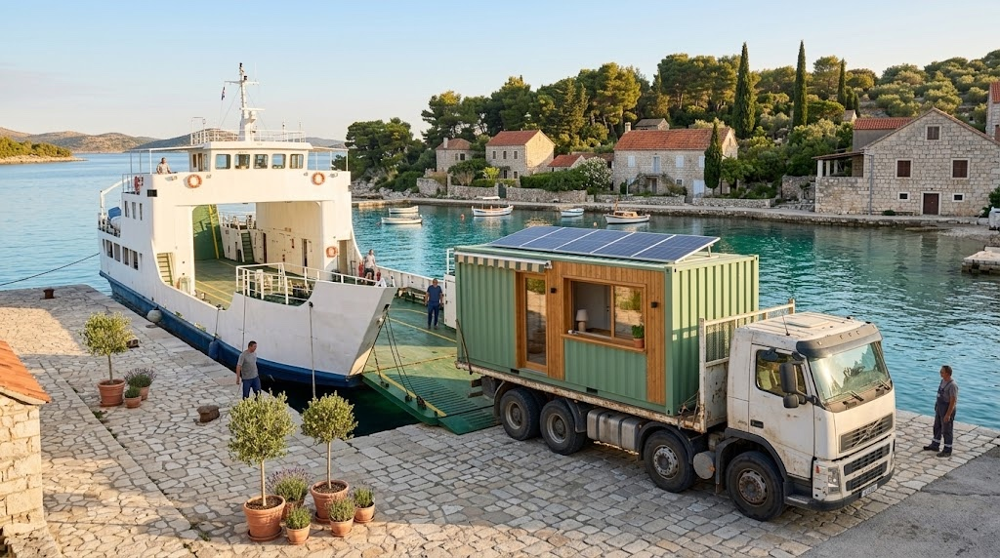
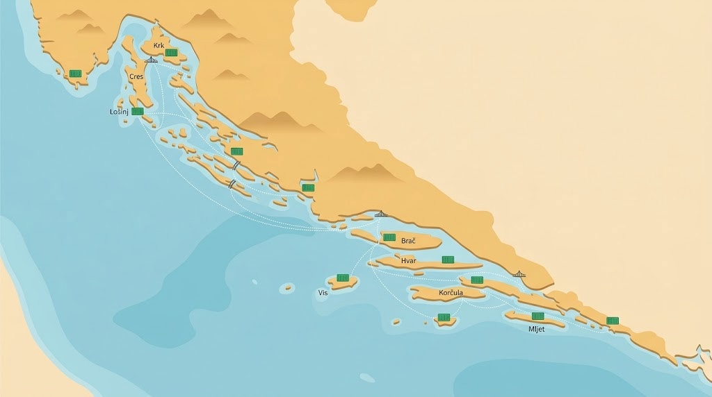
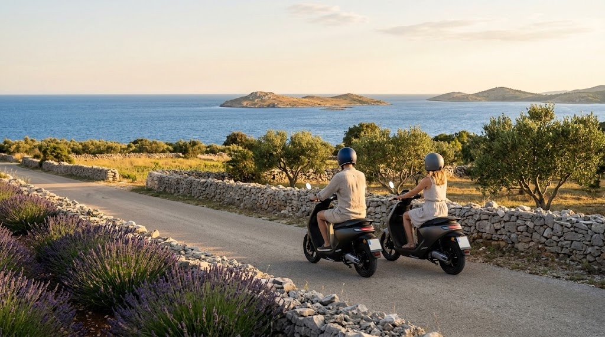
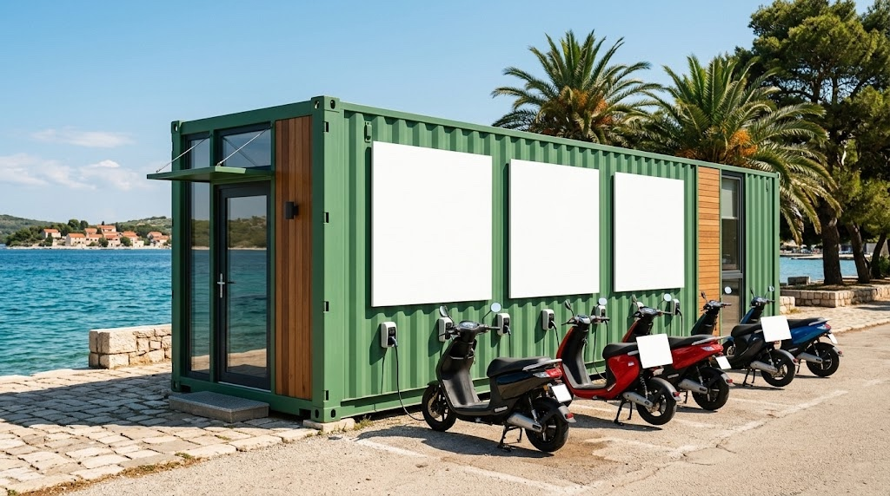
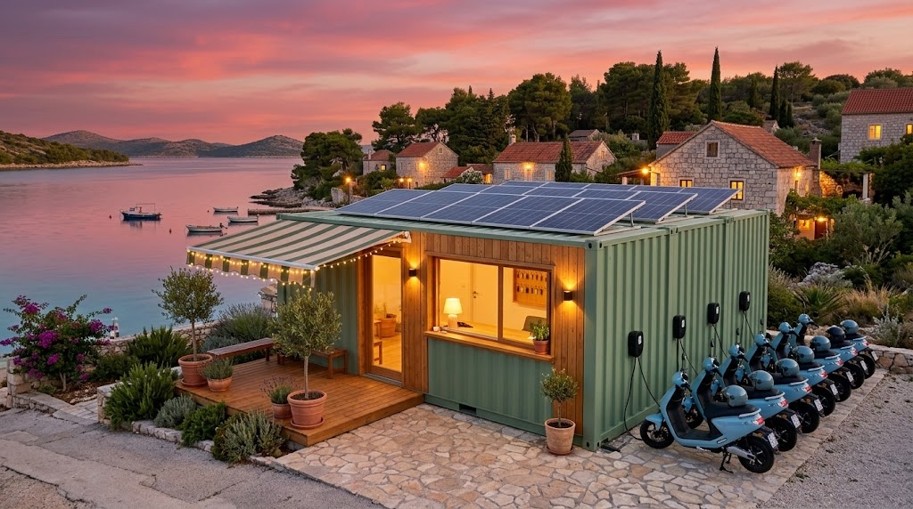

Dragi Svemire,
jutros sam imao viziju za GreenerGo i htio sam ti je odmah zapisati dok je još svježa.
Ideja je jednostavna. Uzmemo nekoliko starih brodskih kontejnera, obnovimo ih i od svakog napravimo mali ured za najam električnih skutera. Na svaki hrvatski otok do kojeg se može doći autom, trajektom ili preko mosta, u sezoni dođe po jedan takav kontejner. Ljudi unajme skuter i voze se po otoku bez buke i bez benzina.
Zovem to Green and Go Croatian Islands. Ostavio sam ime na engleskom jer ga turisti odmah razumiju, a meni se sviđa kako zvuči.
Jedan kontejner radi četiri posla
Kontejner je punionica, skladište za skutere i ured u isto vrijeme. Unutra ima klimu, pa osoba koja radi najam može cijeli dan sjediti u hladu, izdavati skutere i pratiti gdje se koji nalazi. Navečer se skuteri pune na utičnicama uz zid kontejnera i ujutro su spremni.
Zamišljam kontejner od 40 stopa s velikim prozorom kroz koji se izdaje skuter, tendom i malom drvenom terasom ispred. Solarni paneli na krovu bili bi lijep dodatak. Sve su to prijedlozi i ništa još nije odlučeno.

Kamion, trajekt i utičnica
Logistika je stvarno jednostavna. Kamion natovari kontejner, ukrca se na trajekt ili prijeđe most i spusti ga negdje gdje ima struje. Priključimo ga, skuteri se napune i najam može početi isti dan.
Kad sezona završi, kamion ga odveze natrag ili na drugo mjesto. Ne gradimo ništa, kontejner dođe i ode, a otok ostane kakav je bio.

Jedan otok, jedan kontejner
Mjerilo je jasno. Ako se na otok može doći autom, tamo ide jedan kontejner.
Preko mosta
Krk, Pag, Čiovo, Murter, Vir i Pašman
Trajektom
Cres i Lošinj, Rab, Ugljan, Dugi otok, Iž, Brač, Hvar, Šolta, Vis, Korčula, Lastovo i Mljet
To je skoro dvadeset otoka uz cijelu obalu. Popis još moram provjeriti s trenutnim linijama Jadrolinije za aute.

Otok na dva kotača
Mislim na električne skutere na kojima se sjedi, jer se po otoku vozi otvorenom cestom od mjesta do mjesta. Romobili bi mogli doći kao dodatak za kratke vožnje po samom mjestu.
Svaki skuter ima GPS, pa u kontejneru znamo gdje je, koliko mu je baterije ostalo i je li netko zapeo na cesti. To je sigurnost za ljude i za flotu, a radi se po GDPR pravilima.
Za turista to znači da siđe s trajekta bez auta, uzme skuter i vidi otok onako kako ga mi poznajemo. Uvale i maslinike i ono malo selo gore u brdu do kojeg autobus ne ide.

Zeleno i komercijalno u isto vrijeme
Projekt se plaća s tri strane i zato mislim da može trajati godinama, a ne samo jedno ljeto.
Najam
U sezoni su otoci puni ljudi koji bi rado ostavili auto i maknuli se od gužve. Najam skutera je prihod od prvog dana.
Sponzori
Proizvođač skutera dobije svoje ime na kontejnerima i skuterima na skoro dvadeset otoka, pred stotinama tisuća turista svako ljeto. Zauzvrat mi dobijemo flotu besplatno ili puno jeftinije. Prvo bih pitao europske proizvođače kao što su Silence, Askoll, Vespa Elettrica, Govecs i Kumpan. Od domaćih mi se čine prirodni Greyp, HEP s mrežom punionica ELEN, Jadrolinija čijim bi trajektima kontejneri putovali i Hrvatski Telekom za GPS vezu. Nikoga još nisam kontaktirao.
Javni novac za manje CO2
Fond za zaštitu okoliša i energetsku učinkovitost najavio je za ovu jesen poziv od oko 20 milijuna eura za energetski učinkovita vozila i male punionice. EU program LIFE svake godine ima poziv za klimu, pa bi 2027. bila realna godina za prijavu. Tu je i europska inicijativa Clean Energy for EU Islands, a Pokret otoka im je partner u Hrvatskoj i mogao bi nam otvoriti vrata. Treba još provjeriti tko se sve smije javiti na koji poziv.

Kako bih počeo
Počeo bih s jednim kontejnerom na jednom otoku, da vidimo kako to radi u stvarnosti prije nego krenemo dalje. Meni je prirodan Ugljan, Kukljica, jer tamo poznajem teren i ljude koji bi nam pomogli.
Prvo bi trebalo naći rabljeni kontejner i mjesto sa strujom, razgovarati s općinom i pitati jednog proizvođača bi li nam dao skutere za probnu sezonu. Ako to ljeto prođe dobro, sljedeće godine idemo na više otoka.

Znam da je ovo puno odjednom i da imaš svoje planove. Ako ti se ne sviđa ili trenutno nemaš vremena, slobodno mi reci i nema nikakve ljutnje.
Ali ja bih jako volio da ovo napravimo zajedno. Ako ti se ideja čini dobra, nađimo se ovaj tjedan na kavi pa je prođemo od početka do kraja.
Pozdrav,
Marko